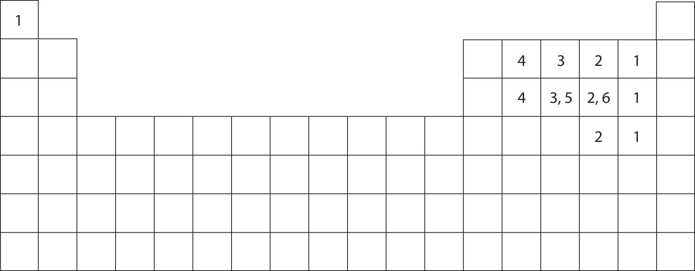
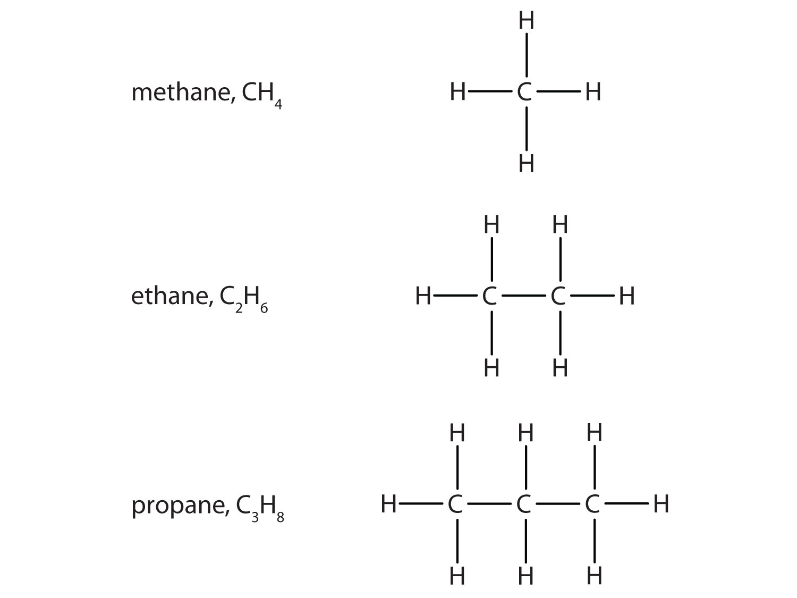
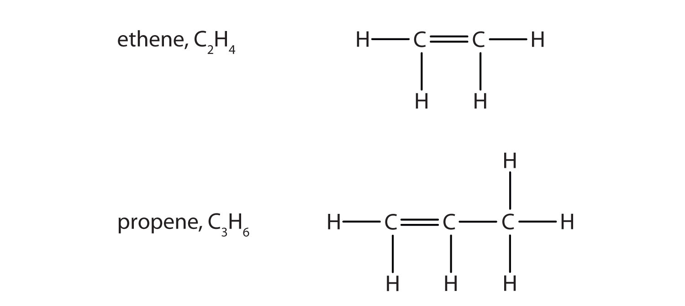
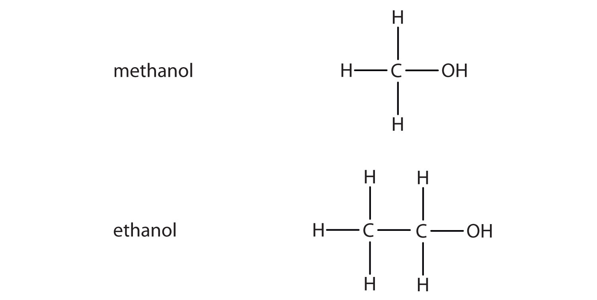
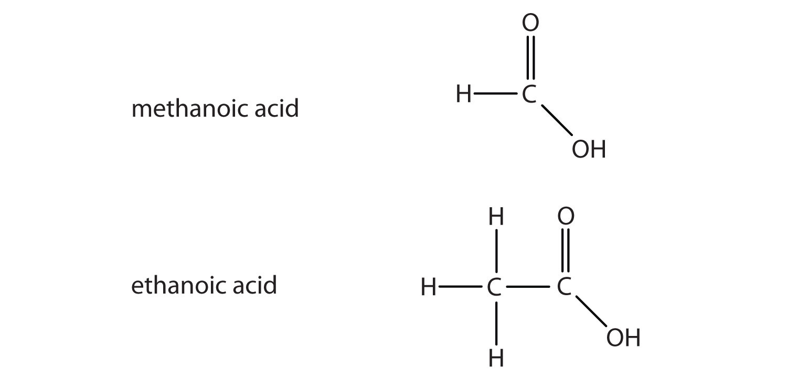

Cholesterol (C27H46O), a compound that is sometimes in the news, is a white, waxy solid produced in the liver of every animal, including humans. It is important for building cell membranes and in producing certain hormones (chemicals that regulate cellular activity in the body). As such, it is necessary for life, but why is cholesterol the object of attention?
Besides producing cholesterol, we also ingest some whenever we eat meat or other animal-based food products. People who eat such products in large quantities, or whose metabolisms are unable to handle excess amounts, may experience an unhealthy buildup of cholesterol in their blood. Deposits of cholesterol, called plaque, may form on blood vessel walls, eventually blocking the arteries and preventing the delivery of oxygen to body tissues. Heart attacks, strokes, and other circulatory problems can result.
Most medical professionals recommend diets that minimize the amount of ingested cholesterol as a way of preventing heart attacks and strokes. Tests are available to measure cholesterol in the blood, and there are several drugs capable of lowering cholesterol levels.
Figure 4.1 A Molecular Model of Cholesterol

Chapter 3 "Ionic Bonding and Simple Ionic Compounds" discussed ionic bonding, which results from the transfer of electrons among atoms or groups of atoms. In this chapter, we will consider another type of bonding—covalent bonding. We will examine how atoms share electrons to form these bonds, and we will begin to explore how the resulting compounds, such as cholesterol, are different from ionic compounds.
You have already seen examples of substances that contain covalent bonds. One substance mentioned in Chapter 3 "Ionic Bonding and Simple Ionic Compounds" was water (H2O). You can tell from its formula that it is not an ionic compound; it is not composed of a metal and a nonmetal. Consequently, its properties are different from those of ionic compounds.
Chapter 3 "Ionic Bonding and Simple Ionic Compounds" described how electrons can be transferred from one atom to another so that both atoms have an energy-stable outer electron shell. Because most filled electron shells have eight electrons in them, chemists called this tendency the octet rule. But there is another way an atom can achieve a full valence shell: atoms can share electrons.
This concept can be illustrated by using two hydrogen atoms, each of which has a single electron in its valence shell. (For small atoms such as hydrogen atoms, the valence shell will be the first shell, which holds only two electrons.) We can represent the two individual hydrogen atoms as follows:
In contrast, when two hydrogen atoms get close enough together to share their electrons, they can be represented as follows:
By sharing their valence electrons, both hydrogen atoms now have two electrons in their respective valence shells. Because each valence shell is now filled, this arrangement is more stable than when the two atoms are separate. The sharing of electrons between atoms is called a covalent bondThe sharing of electrons between two atoms., and the two electrons that join atoms in a covalent bond are called a bonding pair of electronsThe two electrons that join atoms in a covalent bond.. A discrete group of atoms connected by covalent bonds is called a moleculeA discrete group of atoms connected by covalent bonds.—the smallest part of a compound that retains the chemical identity of that compound.
Chemists frequently use Lewis diagrams to represent covalent bonding in molecular substances. For example, the Lewis diagrams of two separate hydrogen atoms are as follows:

The Lewis diagram of two hydrogen atoms sharing electrons looks like this:
This depiction of molecules is simplified further by using a dash to represent a covalent bond. The hydrogen molecule is then represented as follows:
Remember that the dash, also referred to as a single bondA covalent bond formed by a single pair of electrons., represents a pair of electrons.
The bond in a hydrogen molecule, measured as the distance between the two nuclei, is about 7.4 × 10−11 m, or 74 picometers (pm; 1 pm = 1 × 10−12 m). This particular bond lengthThe distance between two nuclei in a covalent bond. represents a balance between several forces: the attractions between oppositely charged electrons and nuclei, the repulsion between two negatively charged electrons, and the repulsion between two positively charged nuclei. If the nuclei were closer together, they would repel each other more strongly; if the nuclei were farther apart, there would be less attraction between the positive and negative particles.
Fluorine is another element whose atoms bond together in pairs to form diatomic (two-atom) molecules. Two separate fluorine atoms have the following electron dot diagrams:
Each fluorine atom contributes one valence electron, making a single bond and giving each atom a complete valence shell, which fulfills the octet rule:
The circles show that each fluorine atom has eight electrons around it. As with hydrogen, we can represent the fluorine molecule with a dash in place of the bonding electrons:
Each fluorine atom has six electrons, or three pairs of electrons, that are not participating in the covalent bond. Rather than being shared, they are considered to belong to a single atom. These are called nonbonding pairs (or lone pairs)Electron pair that does not participate in covalent bonds. of electrons.
Now that we have looked at electron sharing between atoms of the same element, let us look at covalent bond formation between atoms of different elements. Consider a molecule composed of one hydrogen atom and one fluorine atom:
Each atom needs one additional electron to complete its valence shell. By each contributing one electron, they make the following molecule:
In this molecule, the hydrogen atom does not have nonbonding electrons, while the fluorine atom has six nonbonding electrons (three lone electron pairs). The circles show how the valence electron shells are filled for both atoms.
Draw the Lewis diagram for each compound.
Solution
Chlorine has the same valence shell electron configuration as fluorine, so the Lewis diagram for a molecule composed of two chlorine atoms is similar to the one for fluorine:
Bromine has the same valence shell electron configuration as fluorine, so the Lewis diagram for a molecule composed of a hydrogen atom and a bromine atom is similar to that for hydrogen and fluorine:
Draw the Lewis diagram for each compound.
a molecule composed of one chlorine atom and one fluorine atom
a molecule composed of one hydrogen atom and one iodine atom
Larger molecules are constructed in a similar fashion, with some atoms participating in more than one covalent bond. For example, water, with two hydrogen atoms and one oxygen atom, and methane (CH4), with one carbon atom and four hydrogen atoms, can be represented as follows:
Atoms typically form a characteristic number of covalent bonds in compounds. Figure 4.2 "How Many Covalent Bonds Are Formed?" shows the number of covalent bonds various atoms typically form.
Figure 4.2 How Many Covalent Bonds Are Formed?
In molecules, there is a pattern to the number of covalent bonds that different atoms can form. Each block with a number indicates the number of covalent bonds formed by that atom in neutral compounds.
How is a covalent bond formed between two atoms?
How does covalent bonding allow atoms in group 6A to satisfy the octet rule?
Covalent bonds are formed by two atoms sharing electrons.
The atoms in group 6A make two covalent bonds.
Define covalent bond.
What is electron sharing?
Draw the Lewis diagram for the covalent bond in the Br2 molecule.
Draw the Lewis diagram for the covalent bond in the I2 molecule.
Draw the Lewis diagram for the covalent bond in the HCl molecule.
Draw the Lewis diagram for the covalent bond in the HI molecule.
What is the difference between a molecule and a formula unit?
Why do hydrogen atoms not follow the octet rule when they form covalent bonds?
Draw the Lewis diagram for the covalent bonding in H2S. How many bonding electrons and nonbonding electrons are in the molecule?
Draw the Lewis diagram for the covalent bonding in NI3. How many bonding electrons and nonbonding electrons are in the molecule?
Draw the Lewis diagram for the covalent bonding in CF4. How many bonding electrons and nonbonding electrons are in the molecule?
Draw the Lewis diagram for the covalent bonding in PCl3. How many bonding electrons and nonbonding electrons are in the molecule?
How many covalent bonds does a hydrogen atom typically form? Why?
How many covalent bonds does an oxygen atom typically form? Why?
Tellurium atoms make covalent bonds. How many covalent bonds would a tellurium atom make? Predict the formula of a compound between tellurium and hydrogen.
Tin atoms make covalent bonds. How many covalent bonds would a tin atom make? Predict the formula of a compound between tin and hydrogen.
Astatine is a synthetic element, made one atom at a time in huge “atom-smasher” machines. It is in the halogen group on the periodic table. How many covalent bonds would an atom of this element form?
There have been reports that atoms of element 116 were made by smashing smaller atoms together. Using the periodic table, determine what column element 116 would be in and suggest how many covalent bonds an atom of this element would form.
A covalent bond is formed when two atoms share electrons.
A molecule is a discrete combination of atoms; a formula unit is the lowest ratio of ions in a crystal.
bonding electrons: 4; nonbonding electrons: 4
bonding electrons: 8; nonbonding electrons: 24
Hydrogen atoms form only one covalent bond because they have only one valence electron to pair.
two; H2Te
one
What elements make covalent bonds? Covalent bonds form when two or more nonmetals combine. For example, both hydrogen and oxygen are nonmetals, and when they combine to make water, they do so by forming covalent bonds. Nonmetal atoms in polyatomic ions are joined by covalent bonds, but the ion as a whole participates in ionic bonding. For example, ammonium chloride has ionic bonds between a polyatomic ion, NH4+, and Cl− ions, but within the ammonium ion, the nitrogen and hydrogen atoms are connected by covalent bonds:
Is each compound formed from ionic bonds, covalent bonds, or both?
Solution
Is each compound are formed from ionic bonds, covalent bonds, or both?
Ba(OH)2
F2
PCl3
The chemical formulas for covalent compounds are referred to as molecular formulasA chemical formula for a covalent compound. because these compounds exist as separate, discrete molecules. Typically, a molecular formula begins with the nonmetal that is closest to the lower left corner of the periodic table, except that hydrogen is almost never written first (H2O is the prominent exception). Then the other nonmetal symbols are listed. Numerical subscripts are used if there is more than one of a particular atom. For example, we have already seen CH4, the molecular formula for methane.
Naming binary (two-element) covalent compounds is similar to naming simple ionic compounds. The first element in the formula is simply listed using the name of the element. The second element is named by taking the stem of the element name and adding the suffix -ide. A system of numerical prefixes is used to specify the number of atoms in a molecule. Table 4.1 "Numerical Prefixes for Naming Binary Covalent Compounds" lists these numerical prefixes. Normally, no prefix is added to the first element’s name if there is only one atom of the first element in a molecule. If the second element is oxygen, the trailing vowel is usually omitted from the end of a polysyllabic prefix but not a monosyllabic one (that is, we would say “monoxide” rather than “monooxide” and “trioxide” rather than “troxide”).
Table 4.1 Numerical Prefixes for Naming Binary Covalent Compounds
| Number of Atoms in Compound | Prefix on the Name of the Element |
|---|---|
| 1 | mono-* |
| 2 | di- |
| 3 | tri- |
| 4 | tetra- |
| 5 | penta- |
| 6 | hexa- |
| 7 | hepta- |
| 8 | octa- |
| 9 | nona- |
| 10 | deca- |
| *This prefix is not used for the first element’s name. | |
Let us practice by naming the compound whose molecular formula is CCl4. The name begins with the name of the first element—carbon. The second element, chlorine, becomes chloride, and we attach the correct numerical prefix (“tetra-”) to indicate that the molecule contains four chlorine atoms. Putting these pieces together gives the name carbon tetrachloride for this compound.
Write the molecular formula for each compound.
Solution
If there is no numerical prefix on the first element’s name, we can assume that there is only one atom of that element in a molecule.
Write the molecular formula for each compound.
nitrogen dioxide
dioxygen difluoride
sulfur hexafluoride
selenium monoxide
Because it is so unreactive, sulfur hexafluoride is used as a spark suppressant in electrical devices such as transformers.
Write the name for each compound.
Solution
Write the name for each compound.
CF4
SeCl2
SO3
For some simple covalent compounds, we use common names rather than systematic names. We have already encountered these compounds, but we list them here explicitly:
Methane is the simplest organic compoundA compound containing carbon atoms.. Organic compounds are compounds with carbon atoms and are named by a separate nomenclature system that we will introduce in Section 4.6 "Introduction to Organic Chemistry".
How do you recognize a covalent compound?
What are the rules for writing the molecular formula of a simple covalent compound?
What are the rules for naming a simple covalent compound?
A covalent compound is usually composed of two or more nonmetal elements.
It is just like an ionic compound except that the element further down and to the left on the periodic table is listed first and is named with the element name.
Name the first element first and then the second element by using the stem of the element name plus the suffix -ide. Use numerical prefixes if there is more than one atom of the first element; always use numerical prefixes for the number of atoms of the second element.
Identify whether each compound has covalent bonds.
Identify whether each compound has covalent bonds.
Identify whether each compound has ionic bonds, covalent bonds, or both.
Identify whether each compound has ionic bonds, covalent bonds, or both.
Which is the correct molecular formula—H4Si or SiH4? Explain.
Which is the correct molecular formula—SF6 or F6S? Explain.
Write the name for each covalent compound.
Write the name for each covalent compound.
Write the formula for each covalent compound.
Write the formula for each covalent compound.
Write two covalent compounds that have common rather than systematic names.
What is the name of the simplest organic compound? What would its name be if it followed the nomenclature for binary covalent compounds?
SiH4; except for water, hydrogen is almost never listed first in a covalent compound.
H2O and NH3 (water and ammonia) (answers will vary)
In many molecules, the octet rule would not be satisfied if each pair of bonded atoms shares two electrons. Consider carbon dioxide (CO2). If each oxygen atom shares one electron with the carbon atom, we get the following:
This does not give the carbon atom a complete octet; you will find only six electrons in its valence shell. In addition, each oxygen atom has only seven electrons in its valence shell. Finally, no atom makes the number of bonds it typically forms (Figure 4.2 "How Many Covalent Bonds Are Formed?"). This arrangement of shared electrons is far from satisfactory.
Sometimes more than one pair of electrons must be shared between two atoms for both atoms to have an octet. In carbon dioxide, a second electron from each oxygen atom is also shared with the central carbon atom, and the carbon atom shares one more electron with each oxygen atom:
In this arrangement, the carbon atom shares four electrons (two pairs) with the oxygen atom on the left and four electrons with the oxygen atom on the right. There are now eight electrons around each atom. Two pairs of electrons shared between two atoms make a double bondTwo pairs of electrons being shared by two atoms in a molecule. between the atoms, which is represented by a double dash:
Some molecules contain triple bondsThree pairs of electrons being shared by two atoms in a molecule., covalent bonds in which three pairs of electrons are shared by two atoms. A simple compound that has a triple bond is acetylene (C2H2), whose Lewis diagram is as follows:
Draw the Lewis diagram for each molecule.
Solution
The bond between the two nitrogen atoms is a triple bond. The Lewis diagram for N2 is as follows:
In CH2O, the central atom is surrounded by two different types of atoms. The Lewis diagram that fills each atom’s valence electron shell is as follows:
One application of CH2O, also called formaldehyde, is the preservation of biological specimens. Aqueous solutions of CH2O are called formalin and have a sharp, characteristic (pungent) odor.
Draw the Lewis diagram for each molecule.
O2
C2H4
What is one clue that a molecule has a multiple bond?
If single bonds between all atoms do not give all atoms (except hydrogen) an octet, multiple covalent bonds may be present.
Each molecule contains multiple bonds. Draw the Lewis diagram for each. The first element is the central atom.
Each molecule contains double bonds. Draw the Lewis diagram for each. Assume that the first element is the central atom, unless otherwise noted.
Explain why hydrogen atoms do not form double bonds.
Why is it incorrect to draw a double bond in the Lewis diagram for MgO?
Hydrogen can accept only one more electron; multiple bonds require more than one electron pair to be shared.
Covalent bonds have certain characteristics that depend on the identities of the atoms participating in the bond. Two characteristics are bond length and bond polarity.
In Section 4.1 "Covalent Bonds", we stated that the covalent bond in the hydrogen molecule (H2) has a certain length (about 7.4 × 10−11 m). Other covalent bonds also have known bond lengths, which are dependent on both the identities of the atoms in the bond and whether the bonds are single, double, or triple bonds. Table 4.2 "Approximate Bond Lengths of Some Single Bonds" lists the approximate bond lengths for some single covalent bonds. The exact bond length may vary depending on the identity of the molecule but will be close to the value given in the table.
Table 4.2 Approximate Bond Lengths of Some Single Bonds
| Bond | Length (× 10−12 m) |
|---|---|
| H–H | 74 |
| H–C | 110 |
| H–N | 100 |
| H–O | 97 |
| H–I | 161 |
| C–C | 154 |
| C–N | 147 |
| C–O | 143 |
| N–N | 145 |
| O–O | 145 |
Table 4.3 "Comparison of Bond Lengths for Single and Multiple Bonds" compares the lengths of single covalent bonds with those of double and triple bonds between the same atoms. Without exception, as the number of covalent bonds between two atoms increases, the bond length decreases. With more electrons between the two nuclei, the nuclei can get closer together before the internuclear repulsion is strong enough to balance the attraction.
Table 4.3 Comparison of Bond Lengths for Single and Multiple Bonds
| Bond | Length (× 10−12 m) |
|---|---|
| C–C | 154 |
| C=C | 134 |
| C≡C | 120 |
| C–N | 147 |
| C=N | 128 |
| C≡N | 116 |
| C–O | 143 |
| C=O | 120 |
| C≡O | 113 |
| N–N | 145 |
| N=N | 123 |
| N≡N | 110 |
| O–O | 145 |
| O=O | 121 |
Although we defined covalent bonding as electron sharing, the electrons in a covalent bond are not always shared equally by the two bonded atoms. Unless the bond connects two atoms of the same element, there will always be one atom that attracts the electrons in the bond more strongly than the other atom does, as shown in Figure 4.3 "Polar versus Nonpolar Covalent Bonds". When such an imbalance occurs, there is a resulting buildup of some negative charge (called a partial negative charge and designated δ−) on one side of the bond and some positive charge (designated δ+) on the other side of the bond. A covalent bond that has an unequal sharing of electrons, as in part (b) of Figure 4.3 "Polar versus Nonpolar Covalent Bonds", is called a polar covalent bondA covalent bond with an unbalanced electron distribution across the bond.. A covalent bond that has an equal sharing of electrons (part (a) of Figure 4.3 "Polar versus Nonpolar Covalent Bonds") is called a nonpolar covalent bondA covalent bond with a balanced electron distribution across the bond..
Figure 4.3 Polar versus Nonpolar Covalent Bonds

(a) The electrons in the covalent bond are equally shared by both hydrogen atoms. This is a nonpolar covalent bond. (b) The fluorine atom attracts the electrons in the bond more than the hydrogen atom does, leading to an imbalance in the electron distribution. This is a polar covalent bond.
Any covalent bond between atoms of different elements is a polar bond, but the degree of polarity varies widely. Some bonds between different elements are only minimally polar, while others are strongly polar. Ionic bonds can be considered the ultimate in polarity, with electrons being transferred rather than shared. To judge the relative polarity of a covalent bond, chemists use electronegativityA relative measure of how strongly an atom attracts electrons when it forms a covalent bond., which is a relative measure of how strongly an atom attracts electrons when it forms a covalent bond. There are various numerical scales for rating electronegativity. Figure 4.4 "Electronegativities of Various Elements" shows one of the most popular—the Pauling scale. The polarity of a covalent bond can be judged by determining the difference in the electronegativities of the two atoms making the bond. The greater the difference in electronegativities, the greater the imbalance of electron sharing in the bond. Although there are no hard and fast rules, the general rule is if the difference in electronegativities is less than about 0.4, the bond is considered nonpolar; if the difference is greater than 0.4, the bond is considered polar. If the difference in electronegativities is large enough (generally greater than about 1.8), the resulting compound is considered ionic rather than covalent. An electronegativity difference of zero, of course, indicates a nonpolar covalent bond.
Figure 4.4 Electronegativities of Various Elements

A popular scale for electronegativities has the value for fluorine atoms set at 4.0, the highest value.
Arguably the most influential chemist of the 20th century, Linus Pauling (1901–94) is the only person to have won two individual (that is, unshared) Nobel Prizes. In the 1930s, Pauling used new mathematical theories to enunciate some fundamental principles of the chemical bond. His 1939 book The Nature of the Chemical Bond is one of the most significant books ever published in chemistry.
By 1935, Pauling’s interest turned to biological molecules, and he was awarded the 1954 Nobel Prize in Chemistry for his work on protein structure. (He was very close to discovering the double helix structure of DNA when James Watson and James Crick announced their own discovery of its structure in 1953.) He was later awarded the 1962 Nobel Peace Prize for his efforts to ban the testing of nuclear weapons.
In his later years, Pauling became convinced that large doses of vitamin C would prevent disease, including the common cold. Most clinical research failed to show a connection, but Pauling continued to take large doses daily. He died in 1994, having spent a lifetime establishing a scientific legacy that few will ever equal.

Linus Pauling was one of the most influential chemists of the 20th century.
Describe the electronegativity difference between each pair of atoms and the resulting polarity (or bond type).
Solution
Describe the electronegativity difference between each pair of atoms and the resulting polarity (or bond type).
C and O
K and Br
N and N
Cs and F
When a molecule’s bonds are polar, the molecule as a whole can display an uneven distribution of charge, depending on how the individual bonds are oriented. For example, the orientation of the two O–H bonds in a water molecule (Figure 4.5 "Physical Properties and Polarity") is bent: one end of the molecule has a partial positive charge, and the other end has a partial negative charge. In short, the molecule itself is polar. The polarity of water has an enormous impact on its physical and chemical properties. (For example, the boiling point of water [100°C] is high for such a small molecule and is due to the fact that polar molecules attract each other strongly.) In contrast, while the two C=O bonds in carbon dioxide are polar, they lie directly opposite each other and so cancel each other’s effects. Thus, carbon dioxide molecules are nonpolar overall. This lack of polarity influences some of carbon dioxide’s properties. (For example, carbon dioxide becomes a gas at −77°C, almost 200° lower than the temperature at which water boils.)
Figure 4.5 Physical Properties and Polarity

The physical properties of water and carbon dioxide are affected by their polarities.
What is the name for the distance between two atoms in a covalent bond?
What does the electronegativity of an atom indicate?
What type of bond is formed between two atoms if the difference in electronegativities is small? Medium? Large?
bond length
Electronegativity is a qualitative measure of how much an atom attracts electrons in a covalent bond.
nonpolar; polar; ionic
Which is longer—a C–H bond or a C–O bond? (Refer to Table 4.2 "Approximate Bond Lengths of Some Single Bonds".)
Which is shorter—an N–H bond or a C–H bond? (Refer to Table 4.2 "Approximate Bond Lengths of Some Single Bonds".)
A nanometer is 10−9 m. Using the data in Table 4.2 "Approximate Bond Lengths of Some Single Bonds" and Table 4.3 "Comparison of Bond Lengths for Single and Multiple Bonds", determine the length of each bond in nanometers.
An angstrom (Å) is defined as 10−10 m. Using Table 4.2 "Approximate Bond Lengths of Some Single Bonds" and Table 4.3 "Comparison of Bond Lengths for Single and Multiple Bonds", determine the length of each bond in angstroms.
Refer to Exercise 3. Why is the nanometer unit useful as a unit for expressing bond lengths?
Refer to Exercise 4. Why is the angstrom unit useful as a unit for expressing bond lengths?
Using Figure 4.4 "Electronegativities of Various Elements", determine which atom in each pair has the higher electronegativity.
Using Figure 4.4 "Electronegativities of Various Elements", determine which atom in each pair has the lower electronegativity.
Will the electrons be shared equally or unequally across each covalent bond? If unequally, to which atom are the electrons more strongly drawn?
Will the electrons be shared equally or unequally across each covalent bond? If unequally, to which atom are the electrons more strongly drawn?
A C–O bond is longer.
Actual bond lengths are very small, so the nanometer unit makes the expression of length easier to understand.
Unlike the ions in ionic compounds, which are arranged in lattices called crystals, molecules of covalent compounds exist as discrete units with a characteristic mass and a certain three-dimensional shape.
The mass of a molecule—the molecular massThe mass of a molecule, which is the sum of the masses of its atoms. (sometimes called the molecular weight)—is simply the sum of the masses of its atoms. As with formula masses, it is important that you keep track of the number of atoms of each element in the molecular formula to obtain the correct molecular mass. (For more information about formula masses, see Chapter 3 "Ionic Bonding and Simple Ionic Compounds", Section 3.5 "Formula Mass".)
What is the molecular mass of each covalent compound?
Solution
Use the masses of the atoms from the periodic table in Chapter 21 "Appendix: Periodic Table of the Elements".
The molecular formula H2O indicates that there are two hydrogen atoms and one oxygen atom in each molecule. Summing the masses of these atoms,
| 2 H: | 2 × 1.01 = | 2.02 u |
| 1 O: | + 16.00 u | |
| Total: | 18.02 u |
The molecular mass of H2O is 18.02 u.
| 6 C: | 6 × 12.01 = | 72.06 u |
| 6 H: | 6 × 1.01 = | + 6.06 u |
| Total: | 78.12 u |
The molecular mass of C6H6 is 78.12 u.
| 1 N: | 14.01 u | |
| 2 O: | 2 × 16.00 = | + 32.00 u |
| Total: | 46.01 u |
The molecular mass of NO2 is 46.01 u.
| 2 N: | 2 × 14.01 = | 28.02 u |
| 5 O: | 5 × 16.00 = | + 80.00 u |
| Total: | 108.02 u |
The molecular mass of N2O5 is 108.02 u. (Note that the two different nitrogen and oxygen compounds in these examples have different molecular masses.)
What is the molecular mass of each covalent compound?
C2H2
CO
CO2
BF3
Unlike ionic compounds, with their extended crystal lattices, covalent molecules are discrete units with specific three-dimensional shapes. The shape of a molecule is determined by the fact that covalent bonds, which are composed of negatively charged electrons, tend to repel one another. This concept is called the valence shell electron pair repulsion (VSEPR)The general concept that estimates the shape of a simple molecule. theory. For example, the two covalent bonds in BeCl2 stay as far from each other as possible, ending up 180° apart from each other. The result is a linear molecule:
The three covalent bonds in BF3 repel each other to form 120° angles in a plane, in a shape called trigonal planar:
The molecules BeCl2 and BF3 actually violate the octet rule; however, such exceptions are rare and will not be discussed in this text.
Try sticking three toothpicks into a marshmallow or a gumdrop and see if you can find different positions where your “bonds” are farther apart than the planar 120° orientation.
The four covalent bonds in CCl4 arrange themselves three dimensionally, pointing toward the corner of a tetrahedron and making bond angles of 109.5°:
Molecules with lone electron pairs around the central atom have a shape based on the position of the atoms, not the electron pairs. For example, NH3 has one lone electron pair and three bonded electron pairs. These four electron pairs repel each other and adopt a tetrahedral arrangement:
However, the shape of the molecule is described in terms of the positions of the atoms, not the lone electron pairs. Thus, NH3 is said to have a pyramidal shape, not a tetrahedral one. Similarly, H2O has two lone pairs of electrons around the central oxygen atom, in addition to the two bonded pairs:
Although the four electron pairs adopt a tetrahedral arrangement due to repulsion, the shape of the molecule is described by the positions of the atoms only. The shape of H2O is bent.
In determining the shapes of molecules, it is useful to first determine the Lewis diagram for a molecule. The shapes of molecules with multiple bonds are determined by treating the multiple bonds as one bond. Thus, CH2O has a shape similar to that of BF3:
Describe the shape of each molecule.
Solution
The Lewis diagram for PCl3 is as follows:
The four electron pairs arrange themselves tetrahedrally, but the lone electron pair is not considered in describing the molecular shape. Like NH3, this molecule is pyramidal.
The Lewis diagram for CO2 is as follows:
The multiple bonds are treated as one group. Thus, CO2 has only two groups of electrons that repel each other. They will direct themselves 180° apart from each other, so CO2 molecules are linear.
Describe the shape of each molecule.
CBr4
BCl3
How do you determine the molecular mass of a covalent compound?
How do you determine the shape of a molecule?
The molecular mass is the sum of the masses of the atoms in the formula.
The shape of a molecule is determined by the position of the atoms, which in turn is determined by the repulsion of the bonded and lone electron pairs around the central atom.
What is the molecular mass of each compound?
What is the molecular mass of each compound?
Aspirin (C9H8O4) is a covalent compound. What is its molecular mass?
Cholesterol (C27H46O) is a biologically important compound. What is its molecular mass?
What is the shape of each molecule?
What is the shape of each molecule?
Predict the shape of nitrous oxide (N2O), which is used as an anesthetic. A nitrogen atom is in the center of this three-atom molecule.
Predict the shape of acetylene (C2H2), which has the two carbon atoms in the middle of the molecule with a triple bond. What generalization can you make about the shapes of molecules that have more than one central atom?
180.17 u
bent
When methane was mentioned at the end of Section 4.2 "Covalent Compounds: Formulas and Names", we described it as the simplest organic compound. In this section, we introduce organic chemistry more formally.
Organic chemistryThe study of the chemistry of carbon compounds. is the study of the chemistry of carbon compounds. Carbon is singled out because it has a chemical diversity unrivaled by any other chemical element. Its diversity is based on the following:
Curiously, elemental carbon is not particularly abundant. It does not even appear in the list of the most common elements in Earth’s crust. (See Table 2.1 "Elemental Composition of Earth" in Chapter 2 "Elements, Atoms, and the Periodic Table".) Nevertheless, all living things consist of organic compounds.
Most organic chemicals are covalent compounds, which is why we introduce organic chemistry here. By convention, compounds containing carbonate ions and bicarbonate ions, as well as carbon dioxide and carbon monoxide, are not considered part of organic chemistry, even though they contain carbon.
The simplest organic compounds are the hydrocarbonsThe simplest organic compound, composed of carbon and hydrogen atoms only., compounds composed of carbon and hydrogen atoms only. Some hydrocarbons have only single bonds and appear as a chain (which can be a straight chain or can have branches) of carbon atoms also bonded to hydrogen atoms. These hydrocarbons are called alkanes (saturated hydrocarbons)A hydrocarbon with only single covalent bonds and existing as a chain of carbon atoms also bonded to hydrogen atoms.. Each alkane has a characteristic, systematic name depending on the number of carbon atoms in the molecule. These names consist of a stem that indicates the number of carbon atoms in the chain plus the ending -ane. The stem meth- means one carbon atom, so methane is an alkane with one carbon atom. Similarly, the stem eth- means two carbon atoms; ethane is an alkane with two carbon atoms. Continuing, the stem prop- means three carbon atoms, so propane is an alkane with three carbon atoms. Figure 4.6 "Formulas and Molecular Models of the Three Simplest Alkanes" gives the formulas and the molecular models of the three simplest alkanes. (For more information about alkanes, see Chapter 12 "Organic Chemistry: Alkanes and Halogenated Hydrocarbons".)
Figure 4.6 Formulas and Molecular Models of the Three Simplest Alkanes
The three smallest alkanes are methane, ethane, and propane.
Some hydrocarbons have one or more carbon–carbon double bonds (denoted C=C). These hydrocarbons are called alkenesA hydrocarbon with one or more carbon–carbon double bonds.. Figure 4.7 "Formulas and Molecular Models of the Two Simplest Alkenes" shows the formulas and the molecular models of the two simplest alkenes. Note that the names of alkenes have the same stem as the alkane with the same number of carbon atoms in its chain but have the ending -ene. Thus, ethene is an alkene with two carbon atoms per molecule, and propene is a compound with three carbon atoms and one double bond.
Figure 4.7 Formulas and Molecular Models of the Two Simplest Alkenes
Ethene is commonly called ethylene, while propene is commonly called propylene.
AlkynesA hydrocarbon with a carbon–carbon triple bond. are hydrocarbons with a carbon–carbon triple bond (denoted C≡C) as part of their carbon skeleton. Figure 4.8 "Formulas and Molecular Models of the Two Simplest Alkynes" shows the formulas and the molecular models of the two simplest alkynes and their systematic names. The names for alkynes have the same stems as for alkanes but with the ending -yne. (For more information about alkenes and alkynes, see Chapter 13 "Unsaturated and Aromatic Hydrocarbons".)
Figure 4.8 Formulas and Molecular Models of the Two Simplest Alkynes

Ethyne is more commonly called acetylene.
The compound acetylene, with its carbon–carbon triple bond, was introduced in Section 4.3 "Multiple Covalent Bonds" and is an alkyne.
Hydrocarbons are not the only compounds that can have carbon–carbon double bonds. A group of compounds called fats can have them as well, and their presence or absence in the human diet is becoming increasingly correlated with health issues.
Fats are combinations of long-chain organic compounds (fatty acids) and glycerol (C3H8O3). (For more information on fats, see Chapter 17 "Lipids", Section 17.1 "Fatty Acids".) The long carbon chains can have either all single bonds, in which case the fat is classified as saturated, or one or more double bonds, in which case it is a monounsaturated or a polyunsaturated fat, respectively. Saturated fats are typically solids at room temperature; beef fat (tallow) is one example. Mono- or polyunsaturated fats are likely to be liquids at room temperature and are often called oils. Olive oil, flaxseed oil, and many fish oils are mono- or polyunsaturated fats.
Studies have linked higher amounts of saturated fats in people’s diets with a greater likelihood of developing heart disease, high cholesterol, and other diet-related diseases. In contrast, increases in unsaturated fats (either mono- or polyunsaturated) have been linked to a lower incidence of certain diseases. Thus, there have been an increasing number of recommendations by government bodies and health associations to decrease the proportion of saturated fat and increase the proportion of unsaturated fat in the diet. Most of these organizations also recommend decreasing the total amount of fat in the diet.
Recently, certain fats called trans fats have been implicated in the presence of heart disease. These are fats from animal sources and are also produced when liquid oils are exposed to partial hydrogenation, an industrial process that increases their saturation. Trans fats are used in many prepared and fried foods. Because they bring with them the health risks that naturally occurring saturated fats do, there has been some effort to better quantify the presence of trans fats in food products. US law now requires that food labels list the amount of trans fat in each serving.
Since 1992, the US Department of Agriculture has been promoting a food pyramid that gives a simple, visual picture of how much of what kind of foods make up a good, balanced diet. It recommends eating as few fats as possible. Although nutritionists recognize that some fat is necessary (and largely unavoidable, even by strict vegetarians), they emphasize that a large proportion of any fat, saturated or unsaturated, in the diet is unhealthy. Even so, a difference as simple as the difference between a single and double carbon–carbon bond can have a significant impact on health.
The food pyramid has suggestions for the number of daily servings of each type of food.
Source: Image courtesy of the USDA, http://www.mypyramid.gov/downloads/MiniPoster.pdf.
The carbon–carbon double and triple bonds are examples of functional groupsA specific structural arrangement of atoms or bonds that imparts a characteristic chemical reactivity to a molecule. in organic chemistry. A functional group is a specific structural arrangement of atoms or bonds that imparts a characteristic chemical reactivity to a molecule. Alkanes have no functional group. A carbon–carbon double bond is considered a functional group because carbon–carbon double bonds chemically react in specific ways that differ from reactions of alkanes (for example, under certain circumstances, alkenes react with water); a carbon–carbon triple bond also undergoes certain specific chemical reactions. In the remainder of this section, we introduce two other common functional groups.
If an OH group (also called a hydroxyl group) is substituted for a hydrogen atom in a hydrocarbon molecule, the compound is an alcoholAn organic compound with an OH functional group.. Alcohols are named using the parent hydrocarbon name but with the final -e dropped and the suffix -ol attached. The two simplest alcohols are methanol and ethanol. Figure 4.9 "The Two Simplest Organic Alcohol Compounds" shows their formulas along with a molecular model of each.
Figure 4.9 The Two Simplest Organic Alcohol Compounds
Alcohols have an OH functional group in the molecule.
Cholesterol, described in the chapter-opening essay, has an alcohol functional group, as its name implies.
Ethanol (also called ethyl alcohol) is the alcohol in alcoholic beverages. Other alcohols include methanol (or methyl alcohol), which is used as a solvent and a cleaner, and isopropyl alcohol (or rubbing alcohol), which is used as a medicinal disinfectant. Neither methanol nor isopropyl alcohol should be ingested, as they are toxic even in small quantities.
Another important family of organic compounds has a carboxyl groupA functional group that contains a carbon–oxygen double bond and an OH group also attached to the same carbon atom., in which a carbon atom is double-bonded to an oxygen atom and to an OH group. Compounds with a carboxyl functional group are called carboxylic acidsAn organic compound that has a carboxyl functional group., and their names end in -oic acid. Figure 4.10 "The Two Smallest Organic Acids" shows the formulas and the molecular models of the two simplest carboxylic acids, perhaps best known by the common names formic acid and acetic acid. The carboxyl group is sometimes written in molecules as COOH.
Figure 4.10 The Two Smallest Organic Acids
The two smallest carboxylic acids are formic acid (found in the stingers of ants) and acetic acid (found in vinegar).
Many organic compounds are considerably more complex than the examples described here. Many compounds, such as cholesterol discussed in the chapter-opening essay, contain more than one functional group. The formal names can also be quite complex. In Chapter 12 "Organic Chemistry: Alkanes and Halogenated Hydrocarbons" through Chapter 15 "Organic Acids and Bases and Some of Their Derivatives", we will examine the characteristics and chemistry of other important organic compounds and functional groups.
Identify the functional group(s) in each molecule as a double bond, a triple bond, an alcohol, or a carboxyl.
Solution
Identify the functional group(s) in each molecule as a double bond, a triple bond, an alcohol, or a carboxyl.
The main job of a forensic chemist is to identify unknown materials and their origins. Although forensic chemists are most closely associated in the public mind with crime labs, they are employed in pursuits as diverse as tracing evolutionary patterns in living organisms, identifying environmental contaminants, and determining the origin of manufactured chemicals.
In a crime lab, the forensic chemist has the job of identifying the evidence so that a crime can be solved. The unknown samples may consist of almost anything—for example, paint chips, blood, glass, cloth fibers, drugs, or human remains. The forensic chemist subjects them to a variety of chemical and instrumental tests to discover what the samples are. Sometimes these samples are extremely small, but sophisticated forensic labs have state-of-the-art equipment capable of identifying the smallest amount of unknown sample.
Another aspect of a forensic chemist’s job is testifying in court. Judges and juries need to be informed about the results of forensic analyses, and it is the forensic chemist’s job to explain those results. Good public-speaking skills, along with a broad background in chemistry, are necessary to be a successful forensic chemist.
What is organic chemistry?
What is a functional group? Give at least two examples of functional groups.
Organic chemistry is the study of the chemistry of carbon compounds.
A functional group is a specific structural arrangement of atoms or bonds that imparts a characteristic chemical reactivity to the molecule; alcohol group and carboxylic group (answers will vary).
Give three reasons why carbon is the central element in organic chemistry.
Are organic compounds based more on ionic bonding or covalent bonding? Explain.
Identify the type of hydrocarbon in each structure.

Identify the type of hydrocarbon in each structure.
Identify the functional group(s) in each molecule.
Identify the functional group(s) in each molecule.
How many functional groups described in this section contain carbon and hydrogen atoms only? Name them.
What is the difference in the ways the two oxygen atoms in the carboxyl group are bonded to the carbon atom?
Carbon atoms bond reasonably strongly with other carbon atoms. Carbon atoms bond reasonably strongly with atoms of other elements. Carbon atoms make a large number of covalent bonds (four).
two; carbon-carbon double bonds and carbon-carbon triple bonds
To ensure that you understand the material in this chapter, you should review the meanings of the following bold terms in the following summary and ask yourself how they relate to the topics in the chapter.
Atoms can share pairs of valence electrons to obtain a valence shell octet. This sharing of electrons is a covalent bond. A species formed from covalently bonded atoms is a molecule and is represented by a molecular formula, which gives the number of atoms of each type in the molecule. The two electrons shared in a covalent bond are called a bonding pair of electrons. The electrons that do not participate in covalent bonds are called nonbonding pairs (or lone pairs) of electrons. A covalent bond consisting of one pair of shared electrons is called a single bond.
Covalent bonds occur between nonmetal atoms. Naming simple covalent compounds follows simple rules similar to those for ionic compounds. However, for covalent compounds, numerical prefixes are used as necessary to specify the number of atoms of each element in the compound.
In some cases, more than one pair of electrons is shared to satisfy the octet rule. Two pairs of electrons are shared by two atoms to make a double bond. Three pairs of atoms are shared to make a triple bond. Single, double, and triple covalent bonds may be represented by one, two, or three dashes, respectively, between the symbols of the atoms.
The distance between two covalently bonded atoms is the bond length. Bond lengths depend on the types of atoms participating in the bond as well as the number of electron pairs being shared. A covalent bond can be a polar covalent bond if the electron sharing between the two atoms is unequal. If the sharing is equal, the bond is a nonpolar covalent bond. Because the strength of an atom’s attraction for electrons in a bond is rated by the atom’s electronegativity, the difference in the two atoms’ electronegativities indicates how polar a covalent bond between those atoms will be.
The mass of a molecule is called its molecular mass and is the sum of the masses of the atoms in the molecule. The shape of a molecule can be predicted using valence shell electron pair repulsion (VSEPR), which uses the fact that the negative electrons in covalent bonds repel each other as much as possible.
Organic chemistry is the chemistry of carbon compounds. Carbon forms covalent bonds with other carbon atoms and with the atoms of many other elements. The simplest organic compounds are hydrocarbons, which consist solely of carbon and hydrogen. Hydrocarbons containing only single bonds are called alkanes (saturated hydrocarbons). Hydrocarbons containing carbon–carbon double bonds are alkenes, while hydrocarbons with carbon–carbon triple bonds are alkynes. Carbon-carbon double and triple bonds are examples of functional groups, atoms or bonds that impart a characteristic chemical function to the molecule. Other functional groups include the alcohol functional group (OH) and the carboxyl functional group (COOH). They are the characteristic functional group in organic compounds called alcohols and carboxylic acids.
An atomic mass unit equals 1.661 × 10−24 g. What is the mass in grams of each molecule of (a) H2S (b) N2O4 (c) ICl3 (d) NCl3?
An atomic mass unit equals 1.661 × 10−24 g. What is the mass in grams of (a) O2F2 (b) CCl4 (c) C6H6 (d) SO3?
An atomic mass unit equals 1.661 × 10−24 g. What is the mass in grams of 5.00 × 1022 molecules of C9H8O4?
An atomic mass unit equals 1.661 × 10−24 g. What is the mass in grams of 1.885 × 1020 molecules of C27H46O?
Acetic acid has the following structure:

This molecule can lose a hydrogen ion (H+) and the resulting anion can combine with other cations, such as Na+:

Name this ionic compound.
Formic acid (HCOOH) loses a hydrogen ion to make the formate ion (HCOO−). Write the formula for each ionic compound: potassium formate, calcium formate, and ferric formate.
Cyanogen has the formula C2N2. Propose a bonding scheme that gives each atom the correct number of covalent bonds. (Hint: the two carbon atoms are in the center of a linear molecule.)
The molecular formula C3H6 represents not only propene, a compound with a carbon–carbon double bond, but also a molecule that has all single bonds. Draw the molecule with formula C3H6 that has all single bonds.
How many carbon–carbon single bonds, linked together, are needed to make a carbon chain that is 1.000 cm long?
How many carbon–carbon double bonds, linked together, are needed to make a carbon chain that is 1.000 cm long?
In addition to themselves, what other atoms can carbon atoms bond with and make covalent bonds that are nonpolar (or as nonpolar as possible)?
What is the greatest possible electronegativity difference between any two atoms? Use Figure 4.4 "Electronegativities of Various Elements" to find the answer.
Acetaminophen, a popular painkiller, has the following structure:

Name the recognizable functional groups in this molecule. Do you think there are other groups of atoms in this molecule that might qualify as functional groups?
Glutamic acid is the parent compound of monosodium glutamate (known as MSG), which is used as a flavor enhancer. Glutamic acid has the following structure:

Name the functional groups you recognize in this molecule. Do you think there are other groups of atoms in this molecule that might qualify as functional groups?
1a: 5.75 × 10−23 g; 1b: 1.53 × 10−22 g; 1c: 3.88 × 10−22 g; 1d: 6.06 × 10−23 g
14.96 g
sodium acetate
N≡C–C≡N
6.49 × 107 bonds
Hydrogen atoms make relatively nonpolar bonds with carbon atoms.
alcohol; the N–H group, the ring with double bonds, and the C=O are also likely functional groups.